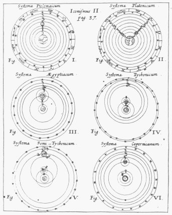

Musicology Musicology ‘Zes opvattingen over het
universum: systema Ptolemaicum, Platonicum, Aegyptiacum,
Tychonicum, semi-Tychonicum en Copernicanum. uit: Athanasius Kircher,
Iter exstaticum coeleste. Würzburg, 1660. tussen p. 36 en
37 |
|
Voorwoord
1 - Inleiding
* De Harmonie der Sferen * Plato's ‘Muziek der Sferen *
Griekse muziekale astronomie * Cicero * Boethius * Verdere historische ontwikkelingen * Besluit
2 - Robert Fludd
*
Inleiding * Strijd met
Johannes Kepler * Strijd met Marin Mersenne *
Utriusque ... cosmi historia * De musica mundana * Besluit
3 - Johannes Kepler
* Inleiding * Harmonices mundi Libri V * Liber
Quinque * De toongeslachten * De modi * De
meerstemmigheid * De vier stemmen: diskant, alt,
tenor en bas * Besluit
4 - Athanasius Kircher
* Inleiding * Musurgia Universalis * Liber X.
Decachordon naturae * De musica mundana * Iter exstaticum coeleste * Besluit
Nawoord
Bibliografie
|